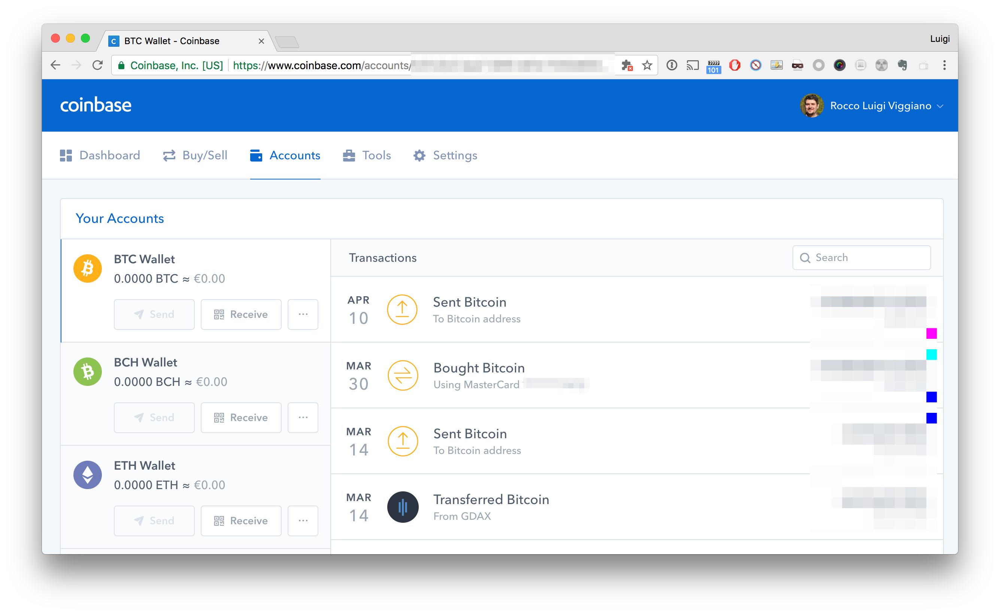

Afinal,
Bitcoin
é uma moeda ou um ativo?
Evandro Pires da Silva
<evandro@evandropires.com.br>
https://www.linkedin.com/in/epiresdasilva/
Funções do Dinheiro
As principais funções do dinheiro são descritas como:
Qualquer item ou registro verificável que atenda a essas funções pode ser considerado como dinheiro.
- um meio de troca;
- uma unidade de conta;
- uma reserva de valor;
O que é Bitcoin?
First decentralized digital currency.
A purely peer-to-peer version of electronic cash would allow online payments to be sent directly from one party to another without going through a financial institution.
Resumo da história do Bitcoin
- Setembro 2008 - Falência do Lehman Brothers.
- Janeiro 2009 - Bitcoin Genesis Block.
- Junho 2011 - WikiLeaks aceita doações com bitcoin.
- Outubro 2013 - O FBI prende Ross Ulbricht (Rota da Seda).
- Dezembro 2013 - Repressão na China.
- Janeiro 2014 - Alibaba para de utilizar bitcoins.
- Fevereiro 2014 - Falência do Mt. Gox, perde 850k btc.
- Janeiro 2015 - Bitstamp hackeada, perde 19k btc.
- Agosto 2016 - Bitfinex hackeda, perde 120k btc.
- 2017 - Japão, Rússia, EUA e outros países falam sobre regulações.
- Dezembro 2017 - Futuros de Bitcoin CBOE e CME cotados na Bolsa de Valores de Chicago.
O que há de novo?
A primeira vez na história, temos um ativo digital que pode ser transferido, mas não pode ser duplicado.
Ouro 2.0?
Endereço Bitcoin

Gerado por bitaddress.org.
Wallets
Hot storage
- Web Wallets.
- Software Wallets:
- Mobile Wallets.
- Desktop Wallets.
Cold storage
- Paper Wallets.
- Hardware Wallets.
Web Wallets

Web Wallets
pros
- Fácil de usar.
- Acessível de qualquer dispositivo.
- Geralmente vinculado a serviços de troca.
cons
- Chaves privadas estão no servidor de outra pessoa.
- Propenso a hackers.
- O gerenciamento de websites pode suspender e controlar sua conta.
- Você confia na segurança de outra pessoa.
Software Wallets


Software Wallets
pros
- Mais seguro do que os web wallets.
- Você tem o controle sobre seu dinheiro.
- Fácil para o uso diário e prático de transportar.
- Você pode fazer backup sozinho.
cons
- Vulnerável a malwares, vírus e hackers.
- O dispositivo pode ser perdido ou roubado ou incorrer em uma falha de hardware.
Paper Wallets

Paper Wallets
pros
- Mais seguro que software wallets e web wallets.
- Sempre off-line (quando corretamente manipulado) não pode ser hackeado.
- Fácil backup.
cons
- Eles podem ficar danificados com o tempo, a água, o fogo...
- Eles podem ser roubados.
- Eles precisam ser gerados offline; algum conhecimento técnico é necessário.
Hardware Wallets


Hardware Wallets
pros
- Mais seguro.
- Pode ser feito backup.
- Protegido por senha.
- Risco mínimo para hacking.
cons
- Custo.
- Não é muito fácil para o uso diário.
{kind=link}
Termos comuns
Bitcoin no mundo
Banco Central do Brasil
"estas (moedas virtuais) não são emitidas nem garantidas por qualquer autoridade monetária, por isso não têm garantia de conversão para moedas soberanas, e tampouco são lastreadas em ativo real de qualquer espécie, ficando todo o risco com os detentores. Seu valor decorre exclusivamente da confiança conferida pelos indivíduos ao seu emissor"
Banco Central Português
"(...) as moedas virtuais não são seguras. As entidades que emitem e comercializam moedas virtuais não são reguladas nem supervisionadas por qualquer autoridade do sistema financeiro, nacional ou europeia" Comunicado do Banco de Portugal
Veja: Bitcoin: a moeda digital que está a desafiar o dinheiro tradicional.
Estcoin: criptomoeda da Estônia
"An ICO within the e-Residency ecosystem would create a strong incentive alignment between e-residents and this fund, and beyond the economic aspect makes the e-residents feel like more of a community since there are more things they can do together." Vitalik Buterin, Ethereum founder and a supporter of the Estcoin Project
Veja: Estonia Considers Issuing ‘Estcoin’ in First Ever Government-Backed ICO e e-Residency
Momento de reflexão
Ponto de vista do G20
"We acknowledge that technological innovation, including that underlying crypto-assets, has the potential to improve the efficiency and inclusiveness of the financial system and the economy more broadly. Cryptoassets do, however, raise issues with respect to consumer and investor protection, market integrity, tax evasion, money laundering and terrorist financing (...)"
{kind=link}
Custo para mineração
Financiamento de terrorismo
"AS the Bitcoin price soars, grotesque terror network ISIS has been using the cryptocurrency to fund its reign of terror."
Veja: Bitcoin WARNING: ISIS using cryptocurrency to fund reign of terror as Bitcoin price soars.